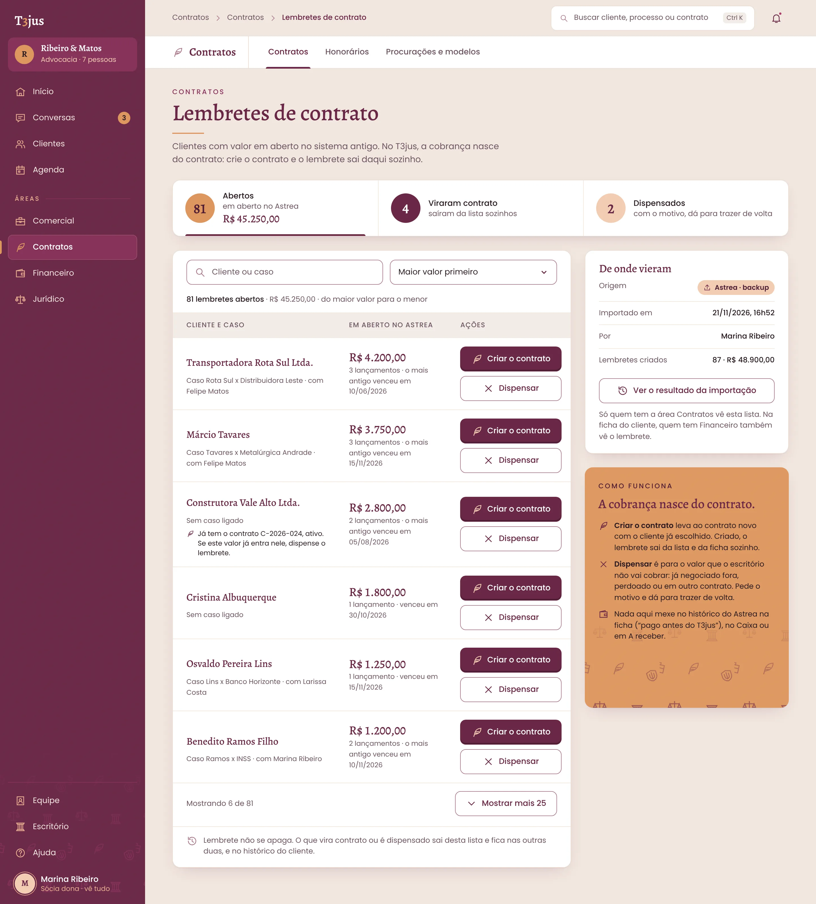

Lembretes abertos
Cada cliente (e caso) com valor em aberto no Astrea, os lançamentos e as ações: Criar o contrato (principal) e Dispensar. Os três números no alto são os filtros: abertos, viraram contrato e dispensados. Ao lado, de onde vieram e como funciona.
Abrir: lembretes.html?estado=lista (estreite a janela para ver o celular)